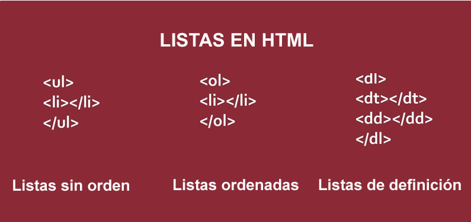
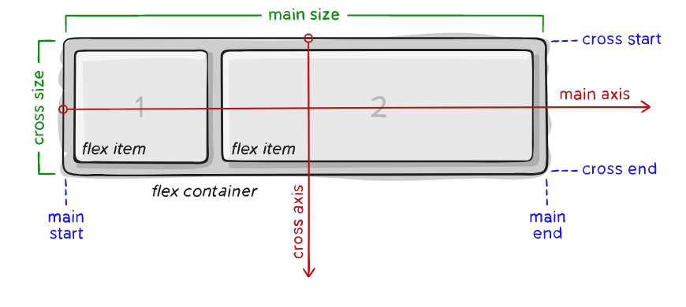

El proposito de este sitio es brindar a los estudiantes de diferentes instituciones educativas información sobre componentes basicos de HTML como lo son los flex box, las listas y los enlaces.
Se visualizara la sintaxis de estas estructuras y como utilizarlas en un archivo HTML.
Listas
Las listas se utilizan para agrupar información parecida o relacionada en una web.
Permiten a los visitantes tener acceso a grupos de información de manera rápida y sencilla.
Existen cuatro tipos de listas: Numeradas, sin numerar, listas de definiciones y listas anidadas.
sin numerar
Contiene los elementos listados, precedidos de una viñeta.
Lista ordenada o numerada
Se trata de listas en las que aparece el numero de orden delante de cada elemento.
Lista de definiciones
Se utilizan para agrupar términos y sus definiciones en una sola lista en la página.
Listas anidadas
Cuando se esta trabajando con listas se pueden anidar unas en otras independientemente del tipo de lista que se esta anidando. Para crear listas anidadas en HTML simplemente se hace que un elemento de una de las listas sea a su vez una lista.
Prescott, P. (2015). HTML 5. Babelcube Inc..

Enlaces
Un enlace es una referencia a otro documento o a otro recurso almacenado en Internet, y que se escribe de una manera universalmente aceptada. Para que se produzca un enlace tiene que haber dos documentos. El primero es el documento origen y contiene la referencia del documento enlazado. El segundo es el documento destino y es el que contiene la información que se quiere ampliar.
Tipos de enlaces
Enlaces internos: Llevan a una zona determinada del mismo documento.
Enlaces locales: llevan a otro documento situado en el mismo servidor
Enlaces externos: llevan a otro documento situado en otro servidor.
Enlaces a otros recursos de Internet: Permiten acceder a los servicios de Internet, como el correo.
Un enlace esta formado por la referencia del documento enlazado, que se define con el atributo HREF; y por modo en el que se muestra dicho documento enlazado, que se define por el atributo TARGET.
Recio García, J. A. (2016). HTML5, CSS3 y JQuery: curso práctico. RA-MA Editorial. p. 52 a 142. https://elibro-net.bibliotecavirtual.unad.edu.co/es/ereader/unad/106494?page=52
Terán Anciano, J. (2016). Manual de Introducción al lenguaje HTML. Formación para el Empleo. Editorial CEP, S.L. p. 134 -140. https://elibro-net.bibliotecavirtual.unad.edu.co/es/ereader/unad/50964?page=134
Flex box
Flexbox tiene como meta ser una forma más eficiente de crear diseños, alinear y distribuir espacios entre ítems en un contenedor, incluso cuando las dimensiones de esos ítems son desconocidas y/o dinámicas (en virtud de eso el término "flex").
